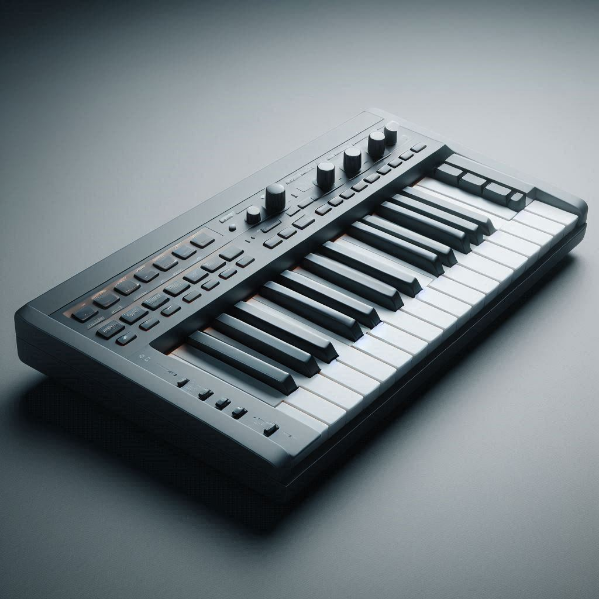
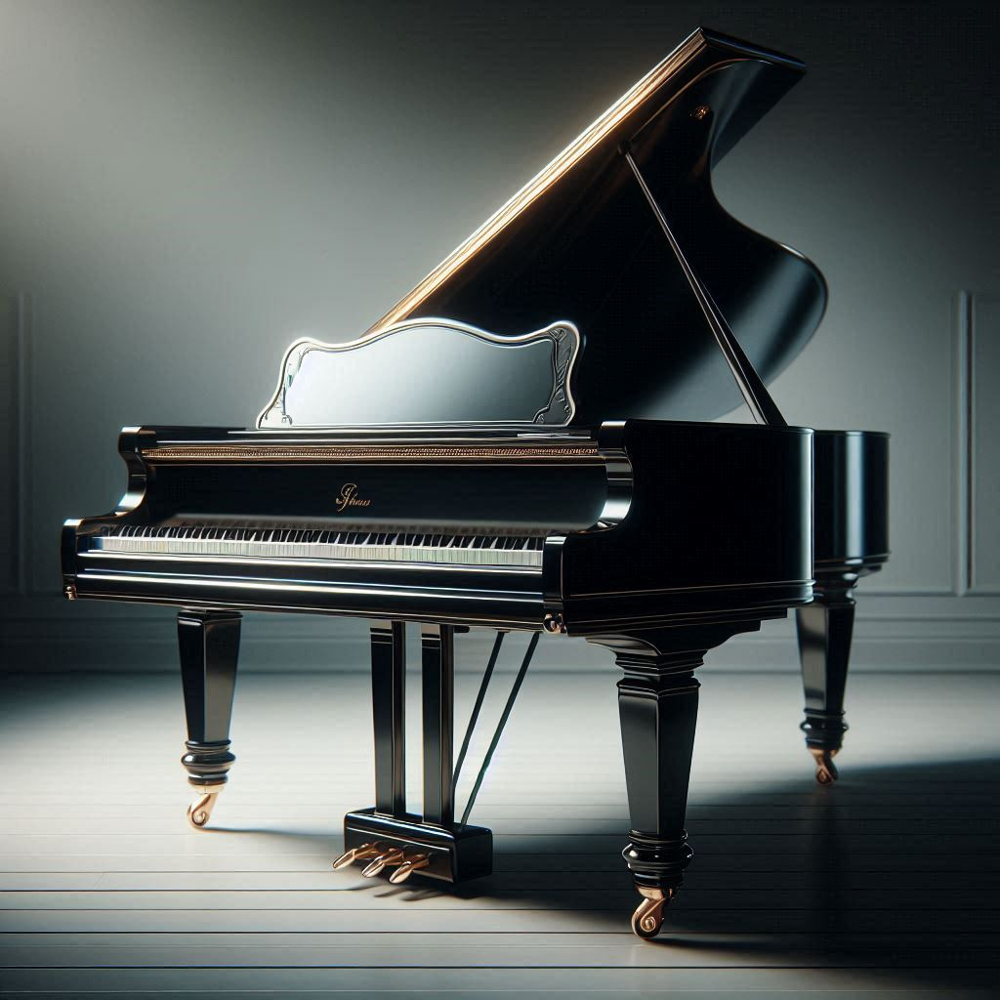
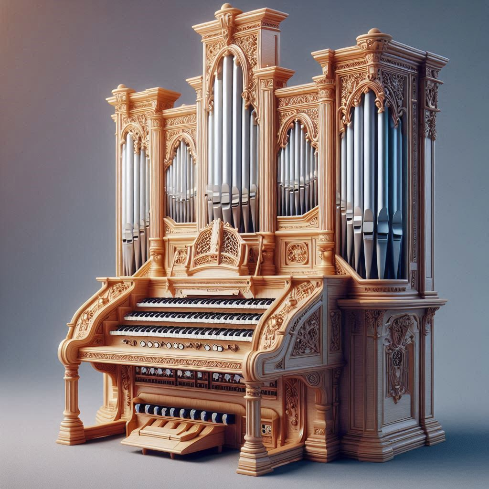
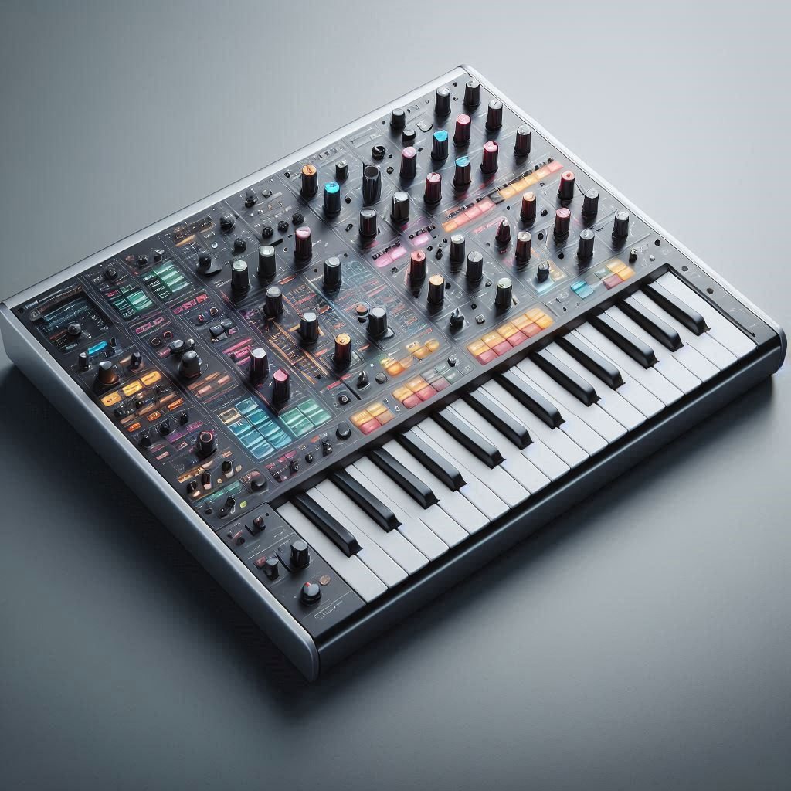
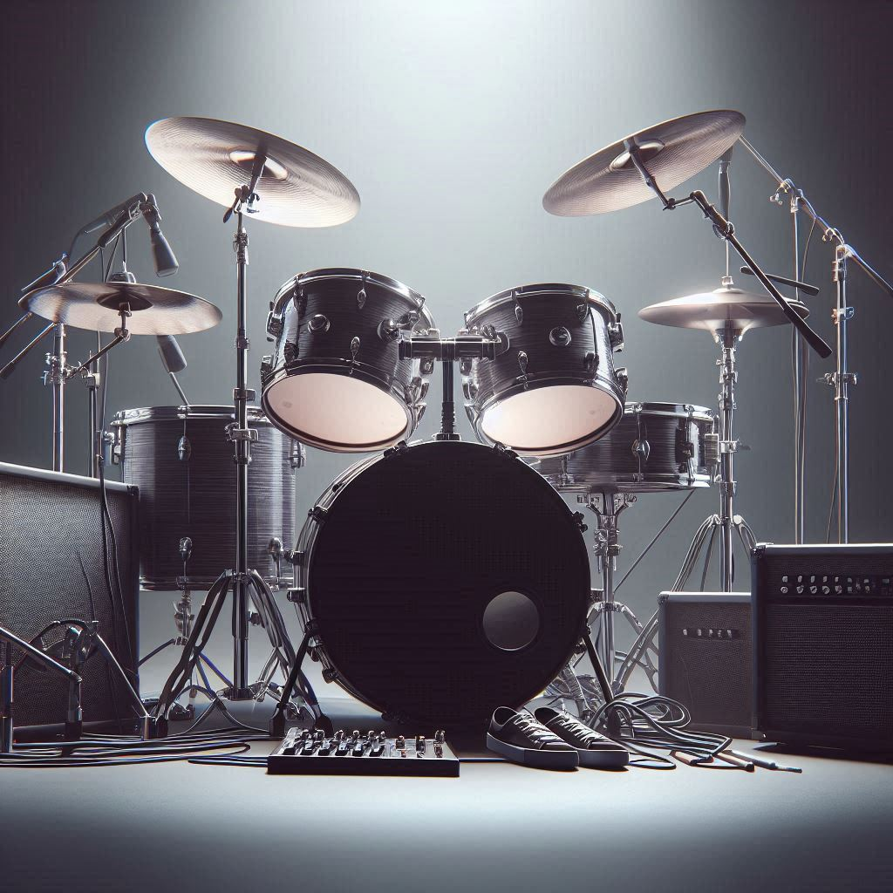
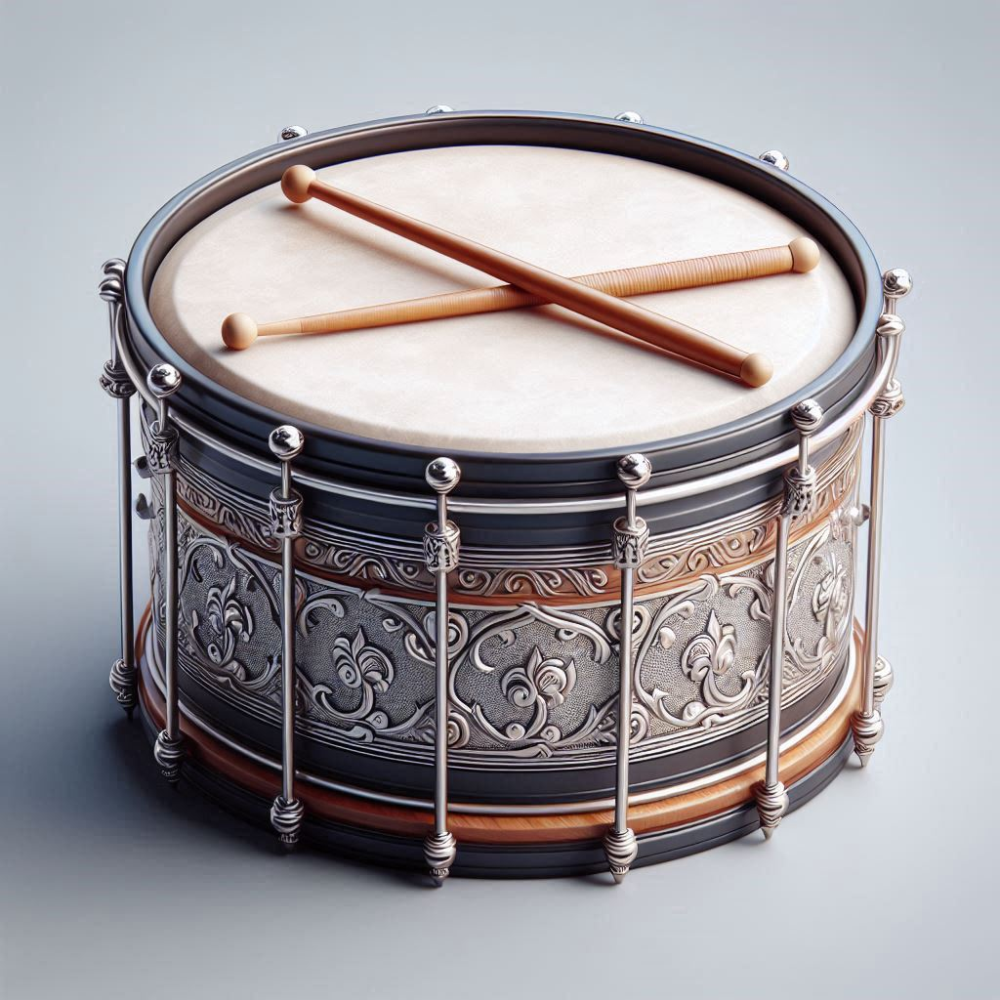
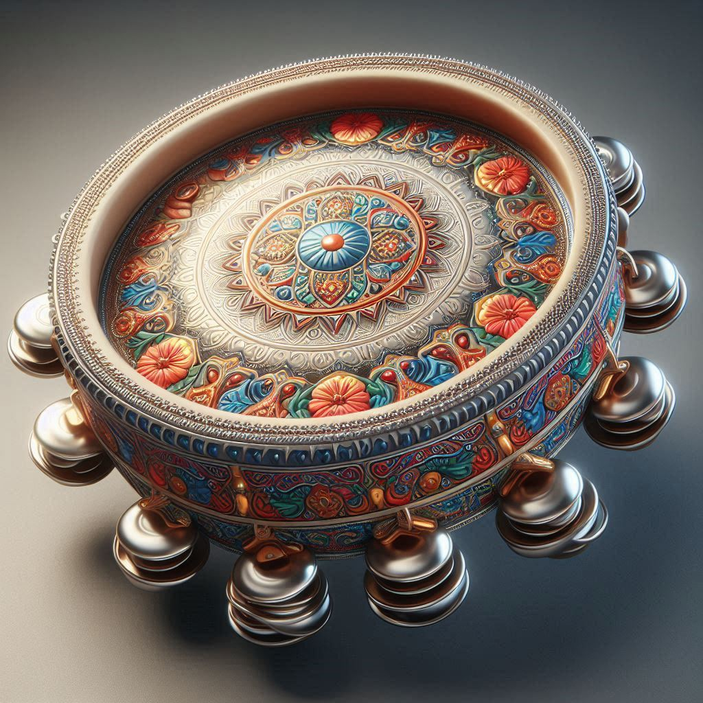
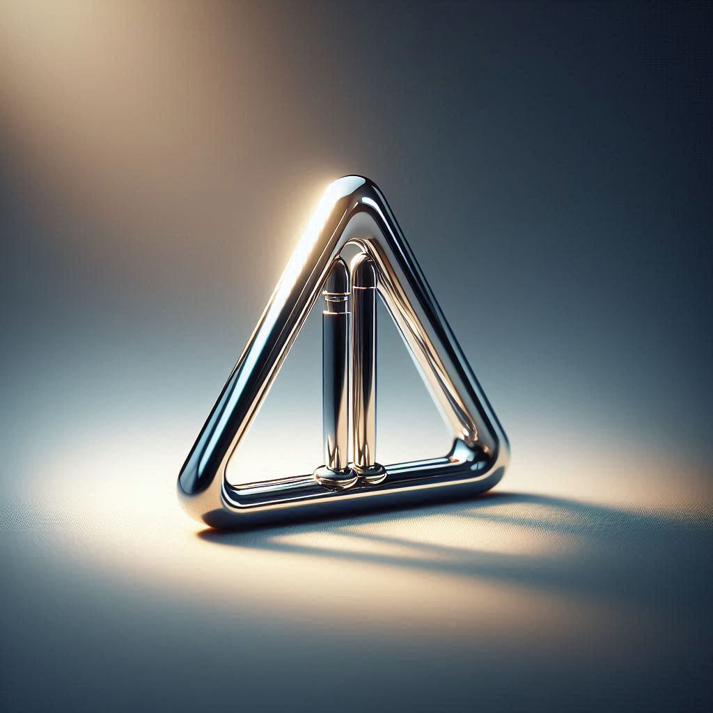

Os instrumentos de teclas são aqueles que possuem teclas para serem tocados. Alguns exemplos são:
O teclado é um instrumento musical que possui teclas brancas e pretas. Ele é utilizado em diversos estilos musicais, como pop, rock e música clássica.
 Saiba mais!O piano é um instrumento musical de cordas percutidas. Ele possui 88 teclas e é utilizado em diversos estilos musicais, como música clássica, jazz e pop.
 Saiba mais!O órgão é um instrumento musical que possui teclas e tubos. Ele é utilizado em diversos estilos musicais, como música clássica, gospel e rock.
 Saiba mais!O sintetizador é um instrumento musical eletrônico que produz sons através de circuitos eletrônicos. Ele é utilizado em diversos estilos musicais, como música eletrônica, pop e rock.
 Saiba mais!Os instrumentos de percussão são aqueles que produzem som através de batidas ou toques. Alguns exemplos são:
A bateria é um instrumento musical que possui tambores e pratos. Ela é utilizada em diversos estilos musicais, como rock, pop e jazz.
 Saiba mais!O tambor é um instrumento musical de percussão que possui uma pele esticada sobre um corpo cilíndrico. Ele é utilizado em diversos estilos musicais, como samba, maracatu e frevo.
 Saiba mais!O pandeiro é um instrumento musical de percussão que possui uma pele esticada sobre um corpo circular. Ele é utilizado em diversos estilos musicais, como samba, frevo e forró.
 Saiba mais!O triângulo é um instrumento musical de percussão que possui uma forma triangular. Ele é utilizado em diversos estilos musicais, como samba, frevo e forró.
 Saiba mais!